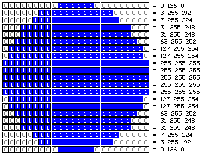
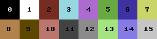
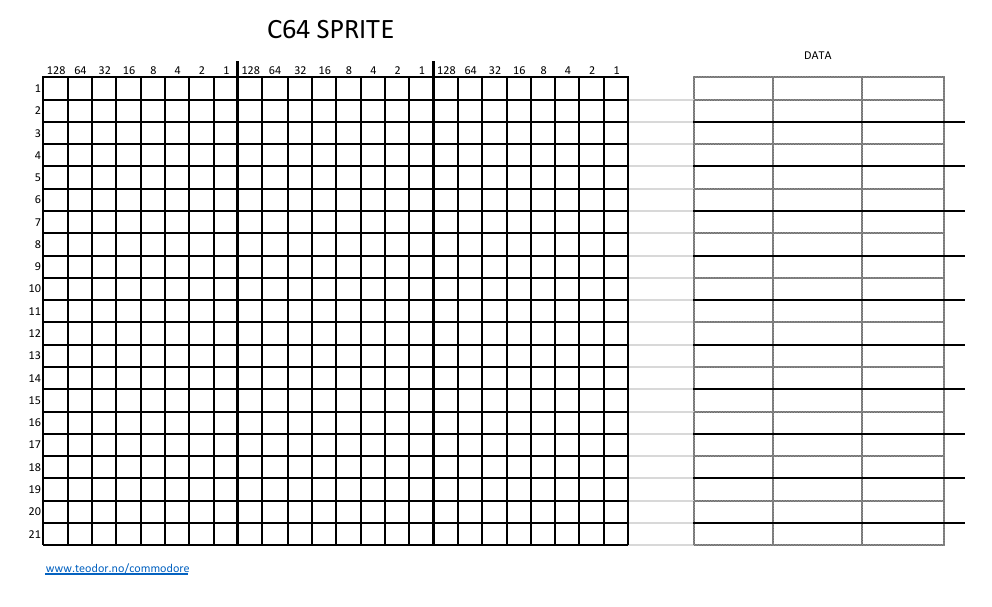

Intro til C64 Sprites
Sprites er små grafiske elementer som kan vises uavhengig av bakgrunnsgrafikken på skjermen. På Commodore 64 håndteres sprites ved å sette bestemte minneadresser, noe som gjør det mulig å lage bevegelige objekter som kan flyttes over skjermen uten å påvirke bakgrunnen. Selv om oppsettet kan virke komplisert i starten, gir sprites en effektiv måte å lage animasjoner og interaktive elementer på skjermen. Ved å endre verdier i minnet kan man enkelt flytte, endre farge eller skjule sprites, noe som gir stor fleksibilitet i grafisk programmering.
Sprites kommer i to variater. high-res og multi-color. En sprite er delt opp i en 24x21 piksler. Som igjen passer inn i 63 bytes. Der hver byte representerer 8 piksler i bredden.
For å jobbe med sprites er det en del minneadresser, som er viktige å kjenne til:
-
Slå av eller på sprites:
Addressen man jobber mot der 53269, der hver bit representerer en sprite. der bit 0 er sprite 0, bit 1
er sprite 1, osv.
Verdiene man setter inn i addressen er da disse:
Sprite nummer: 7 6 5 4 3 2 1 0 Bit verdi 128 64 32 16 8 4 2 1 -
Sprite posisjon på skjermen:
Hver sprite har to minneadresser for posisjon, en for x og en for y. Som kan holde 8 bit verdier.
X posisjonen kan ha en 9 bit verdi, som ikke passer inn i de 8 som er beskrevet her. For å sette den 9
bruker man en annen addresse.
Addressen er 53264 der verdien representere den 9 bit verdien for en gitt sprite. F.eks. 32 for sprite
5, så samme verdier som for å slå av og på.
Sprite nr 0 1 2 3 4 5 6 7 X posisjon 53248 53250 53252 53254 53256 53258 53260 53262 Y posisjon 53249 53251 53253 53255 53257 53259 53261 53263 - Sprite pekere: Hver sprite har en egen minneadresse som fungerer som peker til sprite-dataen. Disse pekerne er plassert 1016 bytes etter starten av tekst-RAM. Standardadressen for tekst-RAM er 1024, noe som betyr at sprite-pekerne befinner seg på adressene 2040 til 2047. Hver peker må angi en adresse som er delelig med 64. For eksempel, hvis sprite-dataen starter på adresse 192, skal verdien i sprite-pekeren være 192 delt på 64, altså 3.
-
Sprite farger: Addressne for sprite-fargtene er fra 53287 til 53294. Hver sprite har en egen farge, og disse adressene brukes til å sette fargen for hver sprite. Fargene er representert som 8-bit verdier, der hver verdi tilsvarer en spesifikk farge i C64s fargepalett. For multi farge modus er det to addresser til som er delt mellom alle sprites, 53285 for 01 bits sprite data og 53286 for 11 bits sprite data.
Sprite nr 0 1 2 3 4 5 6 7 Register 53287 53288 53289 53290 53291 53292 53293 53294 Fargene ser slik ut:

Siden vi skal eksperimentere med sprites i løpet av kvelden, kan det være nyttig med verktøy som hjelper til å generere DATA-verdiene. Her er et nettbasert verktøy som lar deg tegne en sprite og lagre resultatet som BASIC 2.0-kode. For de som ønsker en mer manuell tilnærming, kan et regneark også benyttes til å beregne byte-verdiene. Koden fra verktøyet er ment som støtte og inspirasjon. spritemate
Om man skal prøve å gjøre det slik man ofte gjorde i gamle dager, kan man bruke et regne ark, for så å tenge inn pikslene, så regne ut byte verdien. Bruk da dette bilde som referanse.
Her er et enkelt eksempel på et sprite-program som viser to sprites på skjermen. Programmet leser inn sprite-dataene fra startadressen til sprite 1, hvor de første 63 byte utgjør dataene for sprite 1, og de neste 63 byte for sprite 2. Deretter settes sprite 1 til å peke på adresse 200*64 = 12800, og sprite 2 til å peke på adresse 201*64 = 12864. Last ned sprite demo disk
Her er et eksempel på animerte sprites det brukes 3 spirtes for å lage en enkel animasjon. Last ned animert sprite disk